City layered icon kit V1
Generated candidates; assets-only staging. Visible layers partition supplied generated art. Hidden surfaces remain unresolved. Object silhouettes and dimensions are candidate art, not proof of original-game parity.
grass-material-64
material · 64×64
ground, grass, existing-generated, registered-phase
not applicablegrass-phase-0-0tile · 32×32
ground, grass, existing-generated, registered-phase
not applicablegrass-phase-1-0tile · 32×32
ground, grass, existing-generated, registered-phase
not applicablegrass-phase-0-1tile · 32×32
ground, grass, existing-generated, registered-phase
not applicablegrass-phase-1-1tile · 32×32
ground, grass, existing-generated, registered-phase
not applicablered-floor-swatch
material · 16×16
floor, red, existing-generated, swatch-not-universal-seam-claim
purple-castle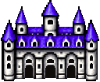
object · 128×104
city, purple-palette, purple-castle
inferred-unresolved: concealed rear, wall tops, roof underside; no generated empty surface claimedpurple-castle--roof-visible-band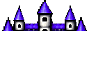
visible-layer · 128×104
visible-partition, foreground
inferred-unresolved; not suppliedpurple-castle--facade-lower-roof-band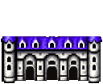
visible-layer · 128×104
visible-partition, background
inferred-unresolved; not suppliedpurple-gable-cottageobject · 64×64
city, purple-palette, cottage
inferred-unresolved: concealed rear, wall tops, roof underside; no generated empty surface claimedpurple-hip-cottageobject · 64×64
city, purple-palette, cottage
inferred-unresolved: concealed rear, wall tops, roof underside; no generated empty surface claimedpurple-hip-cottage--roof-visible-band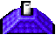
visible-layer · 64×64
visible-partition, foreground
inferred-unresolved; not suppliedpurple-hip-cottage--facade-lower-roof-bandvisible-layer · 64×64
visible-partition, background
inferred-unresolved; not suppliedpurple-narrow-cottageobject · 48×64
city, purple-palette, cottage
inferred-unresolved: concealed rear, wall tops, roof underside; no generated empty surface claimedpurple-narrow-cottage--roof-visible-bandvisible-layer · 48×64
visible-partition, foreground
inferred-unresolved; not suppliedpurple-narrow-cottage--facade-lower-roof-bandvisible-layer · 48×64
visible-partition, background
inferred-unresolved; not suppliedpurple-large-houseobject · 96×64
city, purple-palette, purple-large-house
inferred-unresolved: concealed rear, wall tops, roof underside; no generated empty surface claimedorange-gable-cottageobject · 64×64
city, orange-palette, cottage
inferred-unresolved: concealed rear, wall tops, roof underside; no generated empty surface claimedorange-hip-cottageobject · 64×64
city, orange-palette, cottage
inferred-unresolved: concealed rear, wall tops, roof underside; no generated empty surface claimedorange-hip-cottage--roof-visible-band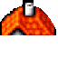
visible-layer · 64×64
visible-partition, foreground
inferred-unresolved; not suppliedorange-hip-cottage--facade-lower-roof-bandvisible-layer · 64×64
visible-partition, background
inferred-unresolved; not suppliedorange-narrow-cottageobject · 48×64
city, orange-palette, cottage
inferred-unresolved: concealed rear, wall tops, roof underside; no generated empty surface claimedorange-narrow-cottage--roof-visible-bandvisible-layer · 48×64
visible-partition, foreground
inferred-unresolved; not suppliedorange-narrow-cottage--facade-lower-roof-bandvisible-layer · 48×64
visible-partition, background
inferred-unresolved; not suppliedorange-large-houseobject · 96×80
city, orange-palette, orange-large-house
inferred-unresolved: concealed rear, wall tops, roof underside; no generated empty surface claimedorange-large-house--roof-visible-band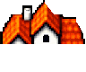
visible-layer · 96×80
visible-partition, foreground
inferred-unresolved; not suppliedorange-large-house--facade-lower-roof-bandvisible-layer · 96×80
visible-partition, background
inferred-unresolved; not suppliedorange-churchobject · 96×80
city, orange-palette, orange-church
inferred-unresolved: concealed rear, wall tops, roof underside; no generated empty surface claimedorange-church--roof-visible-bandvisible-layer · 96×80
visible-partition, foreground
inferred-unresolved; not suppliedorange-church--facade-lower-roof-bandvisible-layer · 96×80
visible-partition, background
inferred-unresolved; not suppliedconiferobject · 48×64
city, neutral, conifer
inferred-unresolved: concealed rear, wall tops, roof underside; no generated empty surface claimedconifer--canopy-band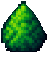
visible-layer · 48×64
visible-partition, foreground
inferred-unresolved; not suppliedconifer--trunk-lower-canopy-bandvisible-layer · 48×64
visible-partition, background
inferred-unresolved; not suppliedstone-bridgeobject · 64×80
city, neutral, stone-bridge
inferred-unresolved: concealed rear, wall tops, roof underside; no generated empty surface claimedstone-bridge--west-parapet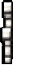
visible-layer · 64×80
bridge, visible-west-parapet
inferred-unresolved; not suppliedstone-bridge--deck-center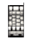
visible-layer · 64×80
bridge, visible-deck
inferred-unresolved; not suppliedstone-bridge--east-parapet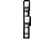
visible-layer · 64×80
bridge, visible-east-parapet
inferred-unresolved; not suppliedgrass-new-materialmaterial · 64×64
ground, generated-new, repeat-seams-unverified
grass-new-phase-0-0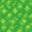
tile · 32×32
ground, registered-phase, arbitrary-repeat-seams-unverified
grass-new-phase-1-0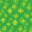
tile · 32×32
ground, registered-phase, arbitrary-repeat-seams-unverified
grass-new-phase-0-1tile · 32×32
ground, registered-phase, arbitrary-repeat-seams-unverified
grass-new-phase-1-1tile · 32×32
ground, registered-phase, arbitrary-repeat-seams-unverified
stone-paving-material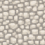
material · 64×64
ground, generated-new, repeat-seams-unverified
stone-paving-phase-0-0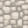
tile · 32×32
ground, registered-phase, arbitrary-repeat-seams-unverified
stone-paving-phase-1-0tile · 32×32
ground, registered-phase, arbitrary-repeat-seams-unverified
stone-paving-phase-0-1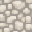
tile · 32×32
ground, registered-phase, arbitrary-repeat-seams-unverified
stone-paving-phase-1-1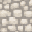
tile · 32×32
ground, registered-phase, arbitrary-repeat-seams-unverified
earth-ground-materialmaterial · 64×64
ground, generated-new, repeat-seams-unverified
earth-ground-phase-0-0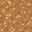
tile · 32×32
ground, registered-phase, arbitrary-repeat-seams-unverified
earth-ground-phase-1-0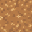
tile · 32×32
ground, registered-phase, arbitrary-repeat-seams-unverified
earth-ground-phase-0-1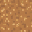
tile · 32×32
ground, registered-phase, arbitrary-repeat-seams-unverified
earth-ground-phase-1-1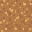
tile · 32×32
ground, registered-phase, arbitrary-repeat-seams-unverified
city-wall-straight
object · 128×64
city-wall, generated-candidate, straight-with-ends
inferred-unresolved: wall back face and top beneath capcity-wall-straight--crenellated-cap-visible-band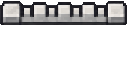
visible-layer · 128×64
wall-cap, visible-partition
inferred-unresolved; not suppliedcity-wall-straight--masonry-face-visible-band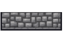
visible-layer · 128×64
wall-face, visible-partition
inferred-unresolved; not suppliedcity-wall-corner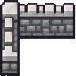
object · 96×96
city-wall, generated-candidate, corner
inferred-unresolved: wall back face and top beneath capcity-wall-corner--crenellated-cap-visible-band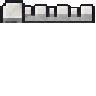
visible-layer · 96×96
wall-cap, visible-partition
inferred-unresolved; not suppliedcity-wall-corner--masonry-face-visible-band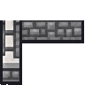
visible-layer · 96×96
wall-face, visible-partition
inferred-unresolved; not suppliedcity-wall-gate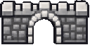
object · 128×64
city-wall, generated-candidate, gate
inferred-unresolved: wall back face and top beneath capcity-wall-gate--crenellated-cap-visible-bandvisible-layer · 128×64
wall-cap, visible-partition
inferred-unresolved; not suppliedcity-wall-gate--masonry-face-visible-band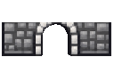
visible-layer · 128×64
wall-face, visible-partition
inferred-unresolved; not suppliedcity-wall-straight-tile-0-0tile · 32×32
city-wall, registered-grid-partition, arbitrary-adjacency-unverified
city-wall-straight-tile-1-0tile · 32×32
city-wall, registered-grid-partition, arbitrary-adjacency-unverified
city-wall-straight-tile-2-0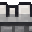
tile · 32×32
city-wall, registered-grid-partition, arbitrary-adjacency-unverified
city-wall-straight-tile-3-0tile · 32×32
city-wall, registered-grid-partition, arbitrary-adjacency-unverified
city-wall-straight-tile-0-1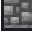
tile · 32×32
city-wall, registered-grid-partition, arbitrary-adjacency-unverified
city-wall-straight-tile-1-1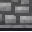
tile · 32×32
city-wall, registered-grid-partition, arbitrary-adjacency-unverified
city-wall-straight-tile-2-1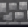
tile · 32×32
city-wall, registered-grid-partition, arbitrary-adjacency-unverified
city-wall-straight-tile-3-1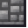
tile · 32×32
city-wall, registered-grid-partition, arbitrary-adjacency-unverified
city-wall-corner-tile-0-0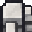
tile · 32×32
city-wall, registered-grid-partition, arbitrary-adjacency-unverified
city-wall-corner-tile-1-0tile · 32×32
city-wall, registered-grid-partition, arbitrary-adjacency-unverified
city-wall-corner-tile-2-0tile · 32×32
city-wall, registered-grid-partition, arbitrary-adjacency-unverified
city-wall-corner-tile-0-1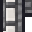
tile · 32×32
city-wall, registered-grid-partition, arbitrary-adjacency-unverified
city-wall-corner-tile-1-1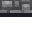
tile · 32×32
city-wall, registered-grid-partition, arbitrary-adjacency-unverified
city-wall-corner-tile-2-1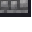
tile · 32×32
city-wall, registered-grid-partition, arbitrary-adjacency-unverified
city-wall-corner-tile-0-2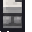
tile · 32×32
city-wall, registered-grid-partition, arbitrary-adjacency-unverified
city-wall-corner-tile-1-2tile · 32×32
city-wall, registered-grid-partition, arbitrary-adjacency-unverified
city-wall-corner-tile-2-2
tile · 32×32
city-wall, registered-grid-partition, arbitrary-adjacency-unverified
city-wall-gate-tile-0-0tile · 32×32
city-wall, registered-grid-partition, arbitrary-adjacency-unverified
city-wall-gate-tile-1-0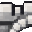
tile · 32×32
city-wall, registered-grid-partition, arbitrary-adjacency-unverified
city-wall-gate-tile-2-0tile · 32×32
city-wall, registered-grid-partition, arbitrary-adjacency-unverified
city-wall-gate-tile-3-0tile · 32×32
city-wall, registered-grid-partition, arbitrary-adjacency-unverified
city-wall-gate-tile-0-1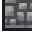
tile · 32×32
city-wall, registered-grid-partition, arbitrary-adjacency-unverified
city-wall-gate-tile-1-1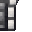
tile · 32×32
city-wall, registered-grid-partition, arbitrary-adjacency-unverified
city-wall-gate-tile-2-1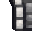
tile · 32×32
city-wall, registered-grid-partition, arbitrary-adjacency-unverified
city-wall-gate-tile-3-1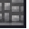
tile · 32×32
city-wall, registered-grid-partition, arbitrary-adjacency-unverified
red-floor-32tile · 32×32
floor, red, generated-existing, resampled-swatch, repeat-seams-unverified
purple-gable-cottage--facade-inferred-under-roofsemantic-layer · 64×64
semantic-partition, composite-layer
Extend white plaster texture sampled only from this generated atlas into concealed facade area; generated roof occludes those pixels. Not recovered original reference.purple-gable-cottage--roof-semantic-overlay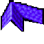
semantic-layer · 64×64
semantic-partition, composite-layer
Extend white plaster texture sampled only from this generated atlas into concealed facade area; generated roof occludes those pixels. Not recovered original reference.purple-gable-cottage--concealed-inference-maskinference-mask · 64×64
semantic-partition, diagnostic-only
Extend white plaster texture sampled only from this generated atlas into concealed facade area; generated roof occludes those pixels. Not recovered original reference.purple-large-house--facade-inferred-under-roofsemantic-layer · 96×64
semantic-partition, composite-layer
Concealed wall filled from known white plaster patch on same generated atlas; visible roof occludes inferred pixels; not original reference reconstruction.purple-large-house--roof-semantic-overlay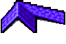
semantic-layer · 96×64
semantic-partition, composite-layer
Concealed wall filled from known white plaster patch on same generated atlas; visible roof occludes inferred pixels; not original reference reconstruction.purple-large-house--concealed-inference-maskinference-mask · 96×64
semantic-partition, diagnostic-only
Concealed wall filled from known white plaster patch on same generated atlas; visible roof occludes inferred pixels; not original reference reconstruction.orange-gable-cottage--facade-inferred-under-roofsemantic-layer · 64×64
semantic-partition, composite-layer
Extend white plaster texture sampled only from this generated atlas into concealed facade area; generated roof occludes those pixels. Not recovered original reference.orange-gable-cottage--roof-semantic-overlay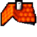
semantic-layer · 64×64
semantic-partition, composite-layer
Extend white plaster texture sampled only from this generated atlas into concealed facade area; generated roof occludes those pixels. Not recovered original reference.orange-gable-cottage--concealed-inference-maskinference-mask · 64×64
semantic-partition, diagnostic-only
Extend white plaster texture sampled only from this generated atlas into concealed facade area; generated roof occludes those pixels. Not recovered original reference.Declared matched joins
grass-registered-phase-2x2: Declared arrangement only; no claim of arbitrary edge compatibility.
grass-new-registered-2x2: Declared arrangement only; no claim of arbitrary edge compatibility.
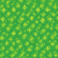
stone-paving-registered-2x2: Declared arrangement only; no claim of arbitrary edge compatibility.
earth-ground-registered-2x2: Declared arrangement only; no claim of arbitrary edge compatibility.
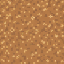
city-wall-straight-grid-reconstruction: Declared arrangement only; no claim of arbitrary edge compatibility.
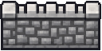
city-wall-corner-grid-reconstruction: Declared arrangement only; no claim of arbitrary edge compatibility.

city-wall-gate-grid-reconstruction: Declared arrangement only; no claim of arbitrary edge compatibility.

Ground/floor repeat previews (seams unverified)
grass-material-64 / visual-repeat-preview; opposite-edge seams unverified
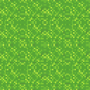
red-floor-swatch / visual-repeat-preview; opposite-edge seams unverified
grass-new-material / visual-repeat-preview; opposite-edge seams unverified
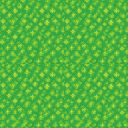
stone-paving-material / visual-repeat-preview; opposite-edge seams unverified
earth-ground-material / visual-repeat-preview; opposite-edge seams unverified
Manifest · Editable crop/layer recipe